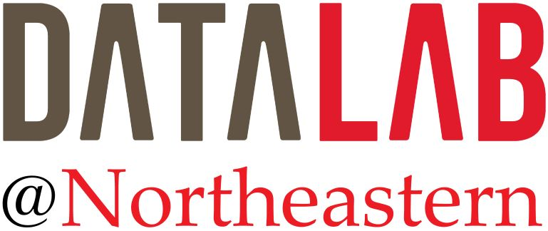

Research

For a representative (though somewhat incomplete) list of my publications, please visit my Google Scholar profile or DBLP.
For Prospective PhD Students and Postdocs Interested In Joining My Lab
Before contacting me, please read the following information carefully.
What our PhD students and postdocs do: design novel algorithms; prove lower bounds, upper bonds, and/or optimality; build big-data systems; publish results in the premier computer-science and domain-science venues; collaborate with experts from industry and various domains in academia.
Where they end up after graduation: in tenure-track faculty positions at research universities (UC Santa Cruz), as postdocs or research fellows at top research institutions (CMU, Darmstadt University, Harvard Medical School), and in tech companies such as Google, Microsoft, or innovative startups.
Will you be a good fit for my lab? To find out, read some of our recent papers and see if you are excited about the problems and our solutions. Ask yourself: Would I have wanted to do this research and write this paper? Where in the spectrum from more theoretical algorithm design and complexity analysis to hands-on system building can you envision yourself? Also check out some of our projects below.
What to do if you are interested in joining my lab:Apply to the Khoury College PhD program in Computer Science—I will look for applicants there and all our PhD students must be admitted through this process. To alert me about your application, please send me a short email where you tell me about your background and why you are interested in working with me. Which paper or project got you excited? What specific aspects of our approach did you find most appealing? Be concrete but brief. Be ready to chat with me about this paper: why does this work matter, what are the main contributions, and what can it do that previous work was not able to do?
Representative Recent Projects
Why Not Yet: Algorithmic Fairness for Individuals and Groups: We are interested in exploring and correcting the impact AI tools have on our everyday lives, especially in the context of algorithmic fairness for ranking. Individuals and institutions have long used rankings for decision-making, e.g., to determine who gets a job, who is admitted to a university, which university to apply to, and even to pick the best basketball players of all time. While it is convenient to rely on data and algorithms to produce such rankings, we must establish guardrails to prevent unintended outcomes. In this project, we investigate acceptable notions and measures of fairness, and devise mechanisms for ensuring that algorithms behave accordingly. One result is a novel fairness definition based on the qualifications of individual entities. It complements previous work, which explored target ranges for the representation of groups in the top positions of a ranking. We also study techniques for explaining and debugging an undesirable ranking and the function used to assign scores to entities. Unlike rankings generated by complex AI approaches that are difficult to understand, we focus on linear functions and attempt to use powerful formal methods in a way that allows our approach to scale to big data.
Any-k: Optimal Ranked Enumeration for Conjunctive Queries: When a query on big data produces huge output, can we quickly return the "most important" results without even computing the entire output? If the notion of importance is difficult to define, can we return the top-ranked results so quickly that the user can try out different options (nearly) interactively? For what types of queries and data can this functionality be supported? And what are the best time and space guarantees we can provide?
Distributinator: Scalable Big-Data Analytics: How do we effectively and efficiently use many machines in a cluster or in a cloud to solve a big-data-analysis challenge? What is the best way to partition a dataset so that running time of the distributed computation is minimized? How do we abstract a complex distributed computation so that we can learn a mathematical model of how running time depends on parameters affecting data partitioning?
NCTracer Web: How do we turn 20,000 3D image stacks (10 terabytes per mouse brain) taken by a high-resolution light microscope into a coherent 3D image of the brain? How do we extract from this massive dataset a graph representing the neurons captured in the image? And how do we analyze this graph efficiently? Can we extend this approach to include other brain data, e.g., from fMRI and electron microscopes? And can we generalize our techniques to graph problems in other domains such as social network analysis?
Table-as-Query: Unifying Data Discovery and Alignment: Fueled by advances in information extraction and societal trends that value institutional openness and transparency, structured data are being produced and shared at an overwhelming speed. Open-data sharing is central to supporting institutional transparency, but transparency is not achieved if shared data cannot be found and effectively aligned with other data being studied by data scientists, journalists, and others. This project contributes to the science of open-data sharing by laying the theoretical foundations of data discovery and by designing a system that solves the problem at scale.